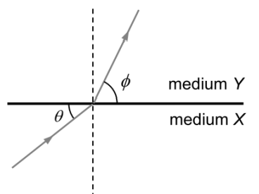
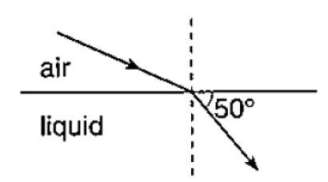

S3 Physics · 3 multiple-choice items
The figure below shows a ray of light entering medium Y from medium X. Which of the following statements is/are correct?
(1) Light travels faster in medium X than in medium Y.
(2) φ is the angle of refraction.
(3) The refractive index of medium X is larger than that of medium Y.

The given ray diagram shows the refraction of light at the surface of an unknown liquid. If the refractive index of the liquid is 1.52, what is the angle of incidence?

The refractive index of diamond is 2.42. What is the speed of light in diamond? (Given that the speed of light in vacuum = 3 × 10⁸ ms⁻¹)
Teacher page · 3 items
Answer: A. (1) only
Guide: The light ray bends towards the normal when it travels from medium X to medium Y, so its speed decreases. Therefore (1) is correct. The angle of refraction is the angle between the refracted ray and the normal, so φ (measured from the surface) is not the angle of refraction and (2) is incorrect. By Snell's law, n_X sin θ_X = n_Y sin θ_Y. As θ_X > θ_Y (angles from the normal), n_X < n_Y, so (3) is incorrect.
Answer: D. 77.7°
Guide: The 50° mark is between the refracted ray and the surface, so the angle of refraction is 90° − 50° = 40°. Using Snell's law: 1 × sin i = 1.52 × sin 40°, so sin i ≈ 0.977 and i ≈ 77.7°.
Answer: B. 1.24 × 10⁸ ms⁻¹
Guide: n = c / v, so v = c / n = (3 × 10⁸ ms⁻¹) / 2.42 ≈ 1.24 × 10⁸ ms⁻¹.